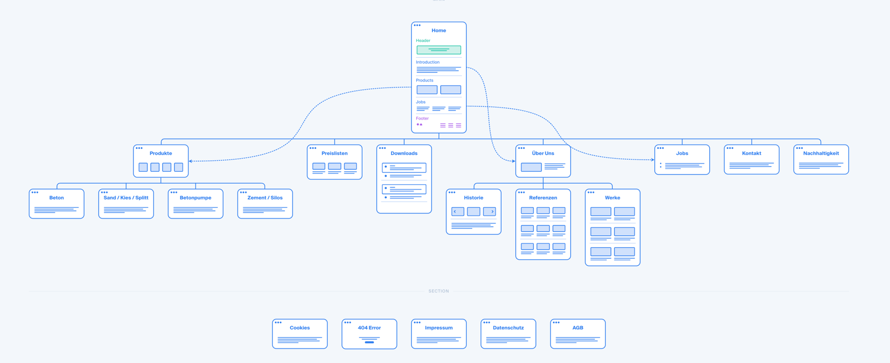

Über uns
Wir sind Felix Franz und Marco Heckler und bilden zusammen Koltrast, ein kleines Designstudio aus Hamburg-Altona. Wir konzipieren und gestalten Websites, Printprodukte und Grafiken.
Warum also schreiben wir Sie direkt an? Kurz gesagt: wir sind an einer Zusammenarbeit interessiert und denken, dass Sie ebenfalls davon profitieren würden. Wir können Ihnen helfen, Kunden zu gewinnen und Nutzern ihrer Website ein besseres Erlebnis zu bieten.
Kürzlich haben wir einem Berliner Kunden aus der Betonbranche geholfen. Die Arbeit in diesem Bereich fanden wir spannend und erfrischend – und wir würden gerne mehr in dieser Richtung bewegen.
⟶ www.barg-beton.de
Was wir für Sie tun können
Gerne würden wir Ihnen helfen, Ihre Website auf den neusten Stand zu bringen. Dabei geht es um eine komfortable Lesbarkeit auf allen Endgeräten – sei es am Monitor, auf dem Tablet oder dem Telefon – sowie um eine sinnvolle Struktur und grafische Aufarbeitung der Inhalte, die auf die Bedürfnisse Ihrer Nutzer abgestimmt ist.
Konkrete Ansätze für Lebbin Beton
Wir haben uns mir Ihrer aktuellen Website beschäftigt und mehrere Bereiche herausgearbeitet, die wir gerne gemeinsam mit Ihnen verbessern würden.
1. Layout & Design
Nachhaltigkeit und moderne Ansätze für den Umgang mit Mitarbeitern und Resourcen sind für Lebbin Beton eine Selbstverständlichkeit, wie die aktuellen Zertifikate zeigen. Wir sind der Meinung, dass auch das Design Ihrer Website diesen modernen Ansatz verdient. Ob es sich dabei um Fotos, Schrift oder das ganzheitliche Layout der Website handelt – gerne würden wir mit Ihnen zusammen dafür sorgen, dass Ihre Online-Präsenz ebenso aktuell ist wie ihr Unternehmen.
2. Responsiveness
Zu einer modernen Website gehört auch, dass sie auf allen Endgeräten gut und einfach zu bedienen ist – dies ist bei Ihrer aktuellen Website nicht der Fall, da sie sich nicht an die Größe der jeweiligen Bildschirme anpasst. Bei der Google Suche „Hamburg Beton“ ist Lebbin Beton weit oben auf der ersten Seite zu finden. Wir sind der Meinung, dass Sie noch mehr Kunden und interessierte Nutzer erreichen könnten, wenn Ihre Seite auch auf Telefonen gut lesbar wäre – und diese enorm gute Google-Platzierung damit besser genutzt würde.
3. Struktur & Navigation
Zurzeit nutzt Ihre Website mehrere Bereiche für die Navigation: eine Leiste oben, eine an der rechten Seite, sowie an einigen Stellen noch eine weitere Subnavigation - ebenfalls am rechten Rand. Durch eine Vereinfachung dieser Struktur könnten Nutzer schneller finden, was sie suchen.
Aus unserer Erfahrung würden wir schließen, dass sie zwei primäre Zielgruppen für die Website haben: zum einen Kunden, welche nach Produkten, Preislisten und Downloads suchen. Zum anderen Menschen, die an einem potentiellen Job interessiert sind. Mit Hilfe einer durchdachten Nutzerführung könnten genau diese Zielgruppen schneller an ihr Ziel finden – sei es das zügige Auffinden einer Preisliste oder der schnelle Weg zur offenen Stelle. Auch die Möglichkeit, sich direkt über die Website bewerben zu können, ohne extra eine E-Mail schreiben zu müssen, wäre sehr gut denkbar und unserer Meinung nach ein großes Plus.
Was nun?
Es freut uns, dass Sie sich die Zeit genommen haben, bis hierhin zu lesen. Vielen Dank! Sicherlich haben Sie selbst Ideen und Bedürfnisse bezüglich Ihrer Website, die wir bisher nicht erfassen konnten. Sollten Sie ebenfalls Interesse an einer Zusammenarbeit haben, kommen wir gerne für ein persönliches Gespräch bei Ihnen vorbei.
Sie erreichen uns per E-Mail an mail@koltrast.de oder per Telefon unter 0178 810 44 59.